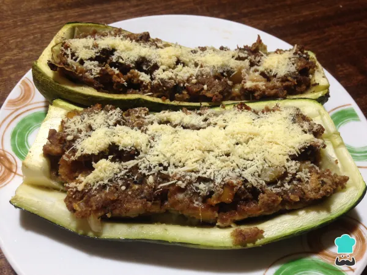

Zapallo Italiano

En RecetasGratis, esta vez te traemos una deliciosa receta chilena: ¡zapallos italianos rellenos! Este plato es una excelente alternativa para disfrutar de un almuerzo saludable, balanceado y ligero. Está hecho con una variedad específica de calabacín, pero puedes prepararlo con la que encuentres en el mercado.
Es muy tradicional en las casas y familias chilenas, pues los zapallos son un cultivo nacional conocido por su alto contenido nutritivo y por su versatilidad en la cocina durante todas las estaciones del año. Si quieres aprovechar todo su sabor y bondades, ¡sigue leyendo y descubre cómo hacer zapallo italiano relleno!
Ingredientes
- 3 zapallos
- 1 cebolla
- 2 pimientos variados (verde, rojo y/o amarillo)
- 250 gramos de carne molida
- 1 pizca de sal
- 1 pizca de pimienta
- 1 pizca de comino
- 4 cucharadas soperas de pan rallado
- 2 cucharadas soperas de leche
- 2 huevos
- Queso parmesano (opcional)
Pasos a seguir
- Para empezar lava muy bien los zapallos, corta las puntas y pártelos a la mitad. Con mucho cuidado, saca el relleno de cada uno dejando los bordes no muy delgados para que se sostengan en la bandejita del horno. Espolvorea sal y pimienta por encima.
- Lava la cebolla y los pimientos y córtalos en cubitos medianos. Sofríe todos los vegetales con la pulpa que retiraste de los zapallos. Agrega sal, pimienta y comino para dar sabor.
- Cuando la cebolla esté transparente agrega la carne molida y sofríe unos minutos hasta que la carne esté oscura.
- Mezcla el huevo, el pan y la leche en un bol aparte. Añade también sal y pimienta.
- Una vez esté listo el sofrito de vegetales, viértelo en el bol con el resto de ingredientes y mezcla muy bien.
- Rellena los zapallitos con la mezcla y llévalos al horno a 180 ºC por 30 minutos o hasta que estén blandos.
- Al sacar los zapallos italianos rellenos del horno, deja que reposen de unos 5 a 10 minutos para que terminen su proceso de cocción y sirve mientras aún están calentitos.